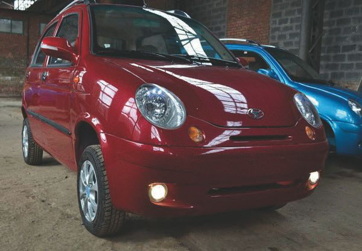
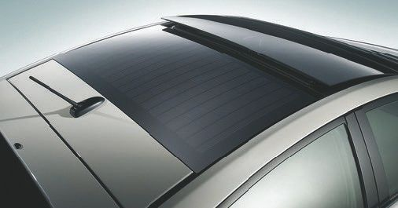
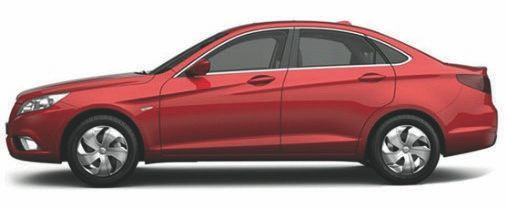
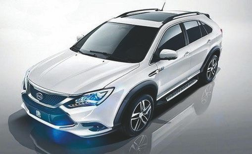
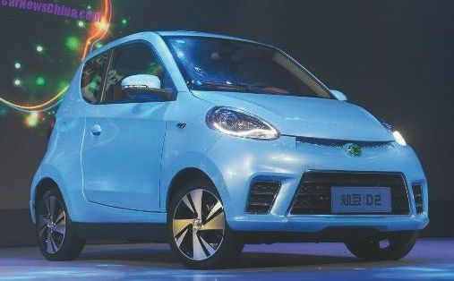
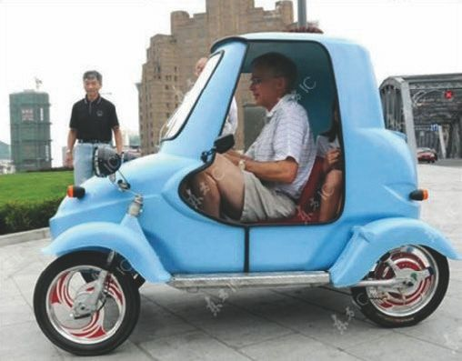

Электромобили китайского производства.
2.2.1. Электромобиль E-Car CD04A (CD04B)
Сегодня в Россию завозятся партии китайских электромобилей, к примеру E-Car GD04A (GD04B), которые дорабатываются на месте для улучшения характеристик. Внешний вид этого электромобиля представлен на рис. 2.3.
В табл. 2.1 представлены технические характеристики китайского электромобиля E-Car GD04A (GD04B).
Таблица 2.1. Технические характеристики E-Car GD04A (GD04B)

Рис. 2.3. Внешний вид китайского электромобиля E-Car GD04A (GD04B)
2.2.2. Электромобиль Zotye Е200Zotye E200 – это новый компактный двухместный электромобиль производства КНР, длина которого чуть менее 3 м. В движение он приводится электромотором, а запас хода составляет порядка 200 км. Модель Zotye Е200 получила электромотор мощность 82 л. с. с крутящим моментом 179 Н-м. Машина способна проехать на одной зарядке аккумулятора до 220 км. Максимальная скорость Е200 составляет 150 км/ч. В базовой версии Е200 будет оснащаться мультимедийной системой с сенсорным дисплеем с навигатором, Bluetooth и функцией управления кондиционером. Также машина будет оснащаться электронным стояночным тормозом и светотехникой с LED-элементами. Еще одна инновационная опция – оснащение заднего стела солнечной батареей – см. рис. 2.4.

Рис. 2.4. Солнечная батарея на заднем стекле
Возможность заряжать аккумуляторы через прямые солнечные лучи приятно удивила многих автолюбителей, однако данная система рассчитана только для подзарядки системы климатического контроля, а не аккумуляторной батареи автомобиля. Дополнительная солнечная батарея на крыше электро– или гибридного автомобиля – сегодня уже не инновация, ибо известно, что солнечная энергия является главной движущей силой в мире высоких технологий, а ее генерирование солнечными панелями требует огромных площадей, что затрудняет их установку на транспортные средства. Производители отказываются от системы подзарядки силового блока с помощью «солнечных панелей», в том числе по причине активных радиопомех при движении – от работы электродвигателя. Были модели авто Prius Solar Panel, они имели мощность 50 Вт. И этой мощности достаточно для того, чтобы подзаряжать топливные элементы автомобиля. Но не силовой его части.
Еще один электромобиль – Zotye Е30 с двигателем мощностью 40 л. с. и крутящим моментом 150 Н-м. Запас хода этого электромобиля составляет 179 км.
В мае 2017 года в Китае было продано более 31 000 новых электромобилей. Хотя это почти столько же, сколько было продано в прошлом месяце, показатель на 53 % превысил аналогичный показатель прошлого года. Традиционно лидером продаж являлась компания Build Your Dreams (BYD), однако в сентябре почетное первое место досталось продукции компании Beijing Auto, известной также как BAIC. BAIC вышла из тени BYD, став новым лидером китайского рынка электромобилей.
Ниже представлены еще пять популярных китайских моделей электромобилей.
2.2.3. Электромобиль BAIC EU260Официально модель располагается между прагматичной BYD е5 и BYD Oin EV300, но имеет более скромный пробег («260» в наименовании модели означает, какое расстояние автомобиль может пройти на одной подзарядке) и не имеет особых спортивных амбиций, как спортивный седан модели Oin, располагая на приводе всего лишь 133 л. с.
Электромобиль BAIC EU260 представлен на рис. 2.5.

Рис. 2.5. Внешний вид электромобиля BAIC EU260
2.2.4. Электромобиль BYD OinПодключаемый гибридный электрический седан BYD Oin с мощностью силового агрегата в 300 л. с. – самый популярный китайский подключаемый гибрид, чей общий объем продаж уже перешагнул 65 000 автомобилей. Электрический седан BYD Oin представлен на рис. 2.6.

Рис. 2.6. Электрический седан модели BYD Oin
Электромобиль BYD Oin. Технические характеристики
2.2.5. Электромобиль BAIC E-Series EV
Электромобиль BAIC E-Series EV – хэтчбэк компании BAIC, на протяжении трех последних лет был самой продаваемой моделью компании, не позволяя ей опускаться в общем рейтинге продаж и занимая почетные призовые места (№ 3 по итогам продаж в 2013 и 2015 годах) в сравнении с объемами производства более прибыльных и новых моделей EU260 и ЕХ200.
Электромобиль BAIC E-Series EV. Технические характеристики
2.2.6. Электромобиль BYD Tang
Это аналог 500-сильной китайской Кайенны (Chinese Cayenne), флагман компании BYD.
2.2.7. Электромобиль Zhidou Dl EVВ Китае приняли новые нормативные требования к низкоскоростным электромобилям – сегмент, который активно вытесняет по продажам более совершенные высокоскоростные электрические автомобили и является серьезным источником загрязнения. Небольшие электрокары низкого качества изготовления с максимальной скоростью ниже 100 км/ч (62 миль/ч) и со свинцовыми аккумуляторами уже заводнили сельскую местность Китая (см. рис. 2.7). Как сообщается на сайте Министерства промышленности и информационных технологий, они представляют серьезную угрозу для безопасности дорожного движения и окружающей среды.

Рис. 2.7. Популярный низкоскоростной китайский электромобиль Zhidou Dl EV
Низкоскоростные электромобили имеют более высокие объемы продаж, по сравнению с качественной продукцией, производимой компаниями BYD, Tesla и других автопроизводителей. В одной только провинции Шаньдун (Shandong) за первые шесть месяцев 2017 года продано более 330 тысяч низкоскоростных подключаемых электромобилей. За этот же период, согласно данным автомобильной ассоциации, в стране было реализовано свыше 245 000 официально сертифицированных электромобилей, изготовленных по новой, совершенной технологии.
С одной стороны, низкоскоростные электромобили закрывают определенную потребность в данном виде транспорта на короткие расстояния, но с другой – продукция, произведенная компаниями без соответствующих сертификатов и верификаций, имеет низкое качество и плохую безопасность. Некоторые компании с продолжительной историей разработки и производства низкоскоростных электромобилей, таких как Shandong Shifeng Group, несомненно преуспеют в этом. Некоторые стартап-компании окрепнут и расширятся, включая компанию Chehejia, чей учредитель Li Xiang основал самый крупный портал Autohome Inc. по продаже легковых автомобилей в Китае.
Компания Beijing CH-Auto Technology Со. стала последним стартапом после Beijing Electric Vehicle Со. и Hangzhou Changjiang Passenger Vehicle Со., который выиграл лицензию на производство электромобилей.
Результатом этого стало производство совсем компактных китайских электромобилей, внешний вид одного из них представлен на рис. 2.8.

Рис. 2.8. Компактный и низкоскоростной китайский электромобиль
Здесь необходимо добавить, что компания Lit Motors, словно в конкурентной борьбе, выпустила в серию двухколесный электромобиль С-1. Исходя из внешнего вида, можно подумать, что автомобиль неустойчив, но это не так. Гироскопы эффективно справляются с поддержанием баланса машины даже в экстремальных условиях.
Дальность хода, скорость зарядки и максимальная скорость – эти показатели определенно важны для читателя. С этим у модели С-1 тоже все отлично: 6-часового заряда хватает на 250–350 км с максимальной скоростью 190 км/ч. Цена начинается с 24 000 долларов.